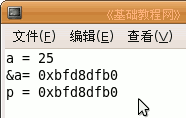
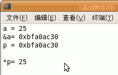
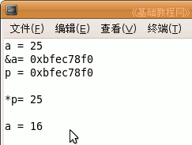

C 编程基础教程
作者：TeliuTe 来源：基础教程网
使用指针可以直接操作内存地址，提高效率，缺点是绕弯比较难理解，下面我们来看一个练习；
1、启动 Geany
1）点菜单“应用程序－编程－Geany”启动 Geany ，新建一个 c 源程序；
2）点菜单“文件－另存为”命令，以“ptr”为文件名，保存文件到自己的文件夹；
2、指针变量
1）使用指针前也要先定义，用 * 号来定义，赋值用其他变量的地址，也可以初始化为空 NULL；
输入下面的代码：
|
int a = 25; int *p = NULL; p = &a; |
2）第一句定义一个整型变量 a，每个变量都有内存地址，用 &a 命令得到变量的地址，
第二句定义一个指针变量，类型是整型，星号 * 是定义符号，NULL 表示赋值为空值，
第三句是给指针变量 p 赋值，值是变量 a 的地址，格式形如 0x123456；
3）接着我们来显示一下各个变量的值，跟各自的类型相对应，%p 是指针类型；
|
printf ("a = %d\n",a); printf ("&a= %p\n",&a); printf ("p = %p\n\n",p); |

4）a 是整型变量，里面装的是整数，&a 是取地址操作符，得到的是地址，
p 是一个指针变量，里面存放的地址，p 给的是 a 的地址，所以两个地址是相同的；
5）接下来我们来看利用指针操作它对应的变量，继续输入下面的代码；
| printf ("*p= %d",*p); |

6）这儿的 *p 不是定义指针，因为星号 * 前面没有类型，而且 p 已经定义过，不能重复定义，
这儿的 *p 是间接引用，指向的是 a，因为 p 里存放的是 a 的地址，因此 *p 的值是 25；
7）利用 *p 可以对变量 a 进行操作，例如下面的代码给 a 重新赋值；
|
*p = 16; printf ("a = %d",a); |

|
#include <stdio.h> int main(int argc, char** argv) { int a = 25; int *p = NULL; /*定义指针变量，并初始化*/ p = &a; /*赋值给指针变量*/ printf ("a = %d\n",a); printf ("&a= %p\n",&a); printf ("p = %p\n\n",p); printf ("*p= %d\n\n",*p); *p = 16; /*间接引用，不是定义指针*/ printf ("a = %d",a); return 0; } |
本节学习了指针的基本操作，如果你成功地完成了练习，请继续学习下一课内容；
本教程由86团学校TeliuTe制作|著作权所有
基础教程网：http://teliute.org/
美丽的校园……
转载和引用本站内容，请保留版权信息和本站链接。